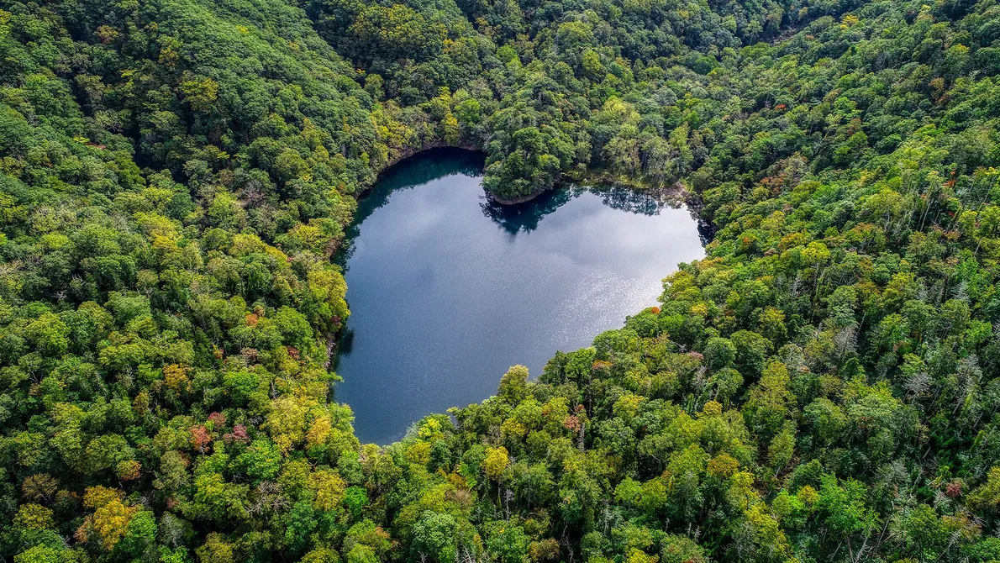
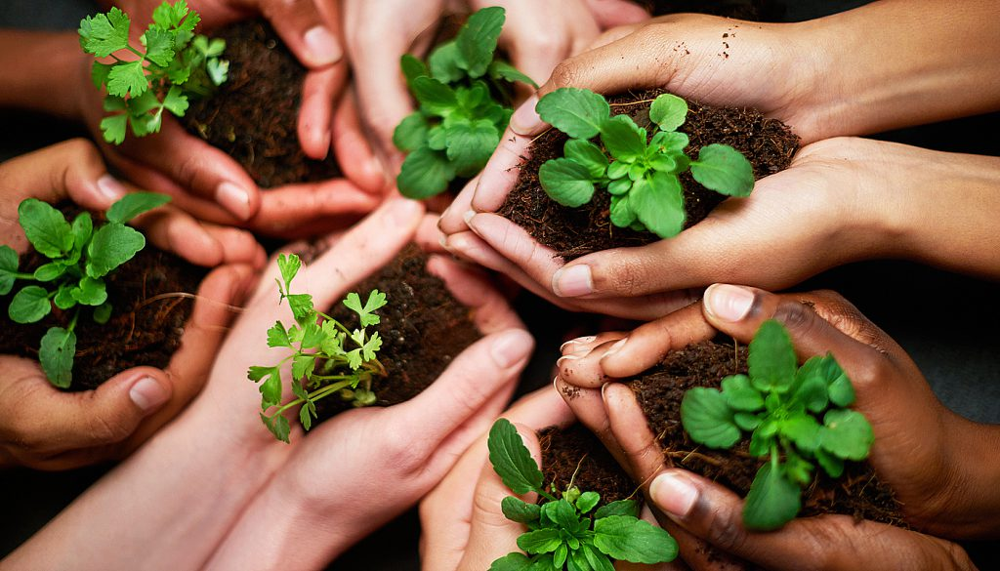

Introduction
Notre objectif : conserver et trouver des solutions pour approfondir la démarche eco-friendly de KDou.
Réalisation technique du rapport
Pour la conception de notre rapport, nous devions développer un site web grâce aux langages HTML5 et CSS3 vu en première année de BUT Informatique en Période A. Ce rapport a donc pour but de mettre en avant les compétences acquises en web.
Technologies utilisées et choix technique/design
- HTML5 pour les éléments du rapport
- CSS3 pour la mise en forme, la cohérence des éléments et l'esthétique du site et faciliter la navigation.
- Responsive design
- Utilisation de tableaux pour structurer les éléments et données.
- Choix de couleur ton vert/nature pour transmettre les valeurs éco-friendly de KDou


Difficultés rencontrées au cours du projet
- Nous avions commencé le projet sans prendre compte du responsive design ce qui nous a obligé à apporter des modifications après certains styles appliqués
- Le responsive design a implémenter pendant la conception du site
Organisation de notre équipe
Nous nous sommes équitablement réparti les tâches tout en gardant le même esprit que pour la première SAÉ.
Notre groupe Discord a été utilisé pour échanger et faire des retours sur le travail de chacun ou pour tout simplement donner son avis, sur la construction du site par exemple.
Nous avions pu analyser et interroger la base de données de KDou via Access.
Ainsi que développer le site ensemble via Github.
Veuillez trouver ci-dessous le récapitulatif de la répartition des requêtes.
| libellé | nom |
|---|---|
| Requête 2 CA total généré, à ce jour, avec les fournisseurs de l'UE. Réflexion sur l'origine des produits |
Nolan |
| Requête 3 Chiffre d'affaire annuel pour les catégories desserts ou boissons. Réflexion en lien avec la santé |
Alicia |
| Requête 4 Nombre de produits carnés non commandés actuellement. Réflexion sur l'offre commerciale |
Serena |
| Requête 5 Nombre de clients pilotes d'un réseau partenaire ayant autant de commandes que les clients partenaires (s'il y en a). Réflexion sur le partenariat client |
Mahé |